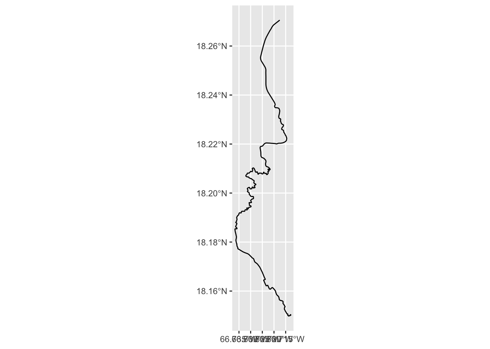

Download GPS data and make a map
Basic concepts behind GPS
How it works
GPS works by estimating distances from satellites through the time difference (i.e. the time it takes for the signal to travel from the satellite to your GPS receiver). You need at least four satellite signals to achieve a GPS location. Basic GPS can achieve on average 7 m accuracy 95% of the time. With additional sources of correction this accuracy can be improved, but this requires a professional grade GPS that has access to this information.

Coordinate systems
GPS collects vector data, which is based on points defined in 2 or 3 dimensions. A lot of times you will see the geographic coordinate system used, which actually is defining location on a sphere.

The x direction (longitude) is defined by the angle of a vertical slice of Earth from the prime meridian, which runs through Greenwich, England. The y direction (latitude) is a horizontal slice defined by the angle from the equator.

But there isn’t just one coordinate system, so it’s important to know what coordinate system you are using when you have geographic location data. Typically, if you are downloading a GIS file, this information is built in.
GPS formats
Some file formats you may encounter when dealing with data from a GPS:
.gpx Most of the standalone recreational GPS units (e.g. Garmin) that I’ve encountered allow you to download gpx files. GaiaGPS also exports into this format.
.kml or .kmz This format can be read directly into Google Earth Pro. It can include different types of geometries as well as display instructions (e.g. color, symbol, etc.). If you use GaiaGPS, you can export your data in this format
geoJSON This is an open source format for storing vector data. You can also export your data in this format from GaiaGPS.
All these formats can be read into r or QGIS.
Another file format you may encounter are “shapefiles”, which originated from ESRI. They do not come as as a single file and instead are several associated files that must be kept together otherwise the data will “break”. This makes them harder to deal with. Recreational GPS’s and GaiaGPS don’t usually deal with shapefiles but you often encounter them when dealing with GIS data.
Download GPS data
You can find example GPS data here:
Using r
These GPS data can be loaded into r using the sf package. To install this package, you have to install some other stuff first. There are instructions here: https://r-spatial.github.io/sf/
Alternatively, you can use the package plotKML.
# install.packages("plotKML") # run this to install the package
library(sf)
library(plotKML)GPX files contain multiple kinds of geographic data (points, lines, polygons). Most GIS software only deals with one kind at a time. This is the case with the sf package but not plotKML.
In the sf package, running the function st_layers will let you peak at what kind of data is hiding in a file. You can then read in the data with st_read. To get to the coordinate information, use the function st_coordinates
# You can explore the contents of the file first with `st_layers`
st_layers("../data/gps/cp.geojson") # only one type of data## Driver: GeoJSON
## Available layers:
## layer_name geometry_type features fields
## 1 cp 3D Multi Line String 1 38st_layers("../data/gps/cp.gpx") # contains multiple layers (points, line string, etc.)## Driver: GPX
## Available layers:
## layer_name geometry_type features fields
## 1 waypoints Point 0 23
## 2 routes Line String 0 12
## 3 tracks Multi Line String 1 13
## 4 route_points Point 0 25
## 5 track_points Point 951 26# run `st_read` to read in the data. Use the ``layer` argument to specify the layer name
tracks <- st_read("../data/gps/cp.gpx", layer = "tracks")## Reading layer `tracks' from data source `C:\Users\Kevin\Documents\GitHub\GIS_workshop\data\gps\cp.gpx' using driver `GPX'
## Simple feature collection with 1 feature and 13 fields
## Geometry type: MULTILINESTRING
## Dimension: XY
## Bounding box: xmin: -66.73672 ymin: 18.1498 xmax: -66.71278 ymax: 18.27058
## Geodetic CRS: WGS 84points <- st_read("../data/gps/Waypoints_31-MAR-21.gpx", layer = "waypoints")## Reading layer `waypoints' from data source
## `C:\Users\Kevin\Documents\GitHub\GIS_workshop\data\gps\Waypoints_31-MAR-21.gpx' using driver `GPX'
## Simple feature collection with 2 features and 23 fields
## Geometry type: POINT
## Dimension: XY
## Bounding box: xmin: -66.76933 ymin: 18.28765 xmax: -66.76933 ymax: 18.28765
## Geodetic CRS: WGS 84# how to get the coordinate information
points_coord <- st_coordinates(points)Alternatively, you can use readGPX from the package plotKML
tracks2 <- readGPX("../data/gps/cp.gpx")
head(tracks2$tracks[[1]]$CP) # in this case, the data are buried in a list of dataframes but it includes the coordinates## lon lat ele time
## 1 -66.71755 18.27058 158.4 2021-06-09T12:36:03Z
## 2 -66.71816 18.27010 157.3 2021-06-09T12:36:08Z
## 3 -66.71966 18.26899 154.5 2021-06-09T12:36:19Z
## 4 -66.72008 18.26865 154.0 2021-06-09T12:36:22Z
## 5 -66.72034 18.26840 153.2 2021-06-09T12:36:24Z
## 6 -66.72057 18.26814 152.4 2021-06-09T12:36:26ZUsing QGIS for GPS import
Alternatively, you can use QGIS to import the data.
https://docs.qgis.org/2.8/en/docs/user_manual/working_with_gps/plugins_gps.html
Making Maps
QGIS
Making maps is probably easiest in QGIS.
Mapping guide (start at 7): https://www.qgistutorials.com/en/docs/3/making_a_map.html
Options for basemaps: https://opengislab.com/blog/2018/4/15/add-basemaps-in-qgis-30
R
If you use sf, you can plot the imported data with the package ggplot2.
library(ggplot2)
ggplot(tracks) + geom_sf()